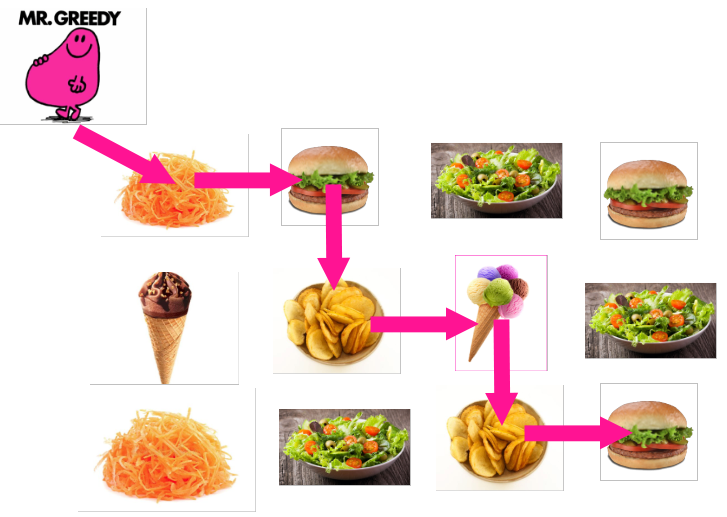
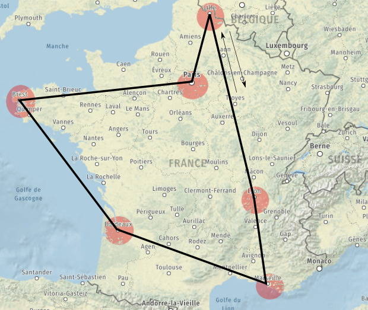
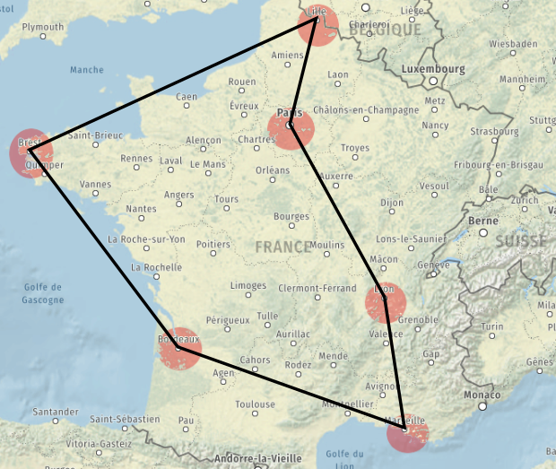

Cours - Les algorithmes gloutons¶
Introduction¶
Nous allons voir à travers ce chapitre un nouveau type d'algorithme permettant de répondre à des problèmes complexes.
Force brute
La stratégie la plus évidente pour résoudre un problème compliqué est la force brute :
- Principe : on calcule tout, quitte à calculer les choses plusieurs fois, voire à calculer des choses qui n'ont pas d'utilité pour trouver la solution.
- Type de problème : tous les problèmes à priori.
- Problème : cela peut prendre énormément de temps si l'on doit faire beaucoup de calculs.
Nous allons voir que l'on peut "tricher" en utilisant la stratégie gloutonne.
- Principe : on ne regarde pas le problème dans sa totalité. On prend une décision localement optimale, de façon définitive et sans se soucier de ce que va devenir le problème restant à traiter.
- Type de problème : ceux pour lequels on peut trouver plusieurs solutions, optimales ou pas.
Voici un exemple : Mr. Glouton veut atteindre la case en bas à droite en mangeant le plus mal possible.

Comme on le voit, la taille du problème à traiter diminue à chaque décision.
La problématique des problèmes complexes¶
Les problèmes complexes (NP, Non déterministe Polynomial) sont des problèmes pour lequels :
- le coût de la résolution par force brute est plus complexe qu'un coût polynomial,
- on peut trouver la meilleure solution si on fait les bons choix par hasard et qu'on a de la chance,
- on peut vérifier qu'une solution qu'on vous propose est valide ou pas avec un coût polynomial.
Nous allons justement voir des problèmes de ce type, et nous y tenterons d'y répondre en temps raisonnable.
Problème du voyageur de commerce¶
Présentation¶
Le problème
Imaginons le problème suivant : vous devez organiser la tournée de votre commercial. Il doit passer dans toutes les villes sous sa responsabilité (une fois uniquement) et revenir à son point de départ (Lille pour notre exemple). Pour limiter les frais, il faut définir le trajet le moins long au total.
Nous allons nous limiter à 6 villes uniquement ici.

Voici un tableau récapitulant les distances entre ces 6 villes :
| Brest | Bordeaux | Lille | Lyon | Marseille | Paris | |
|---|---|---|---|---|---|---|
| Brest | - | 598 | 708 | 872 | 1130 | 572 |
| Bordeaux | 598 | - | 802 | 520 | 637 | 554 |
| Lille | 708 | 802 | - | 650 | 1002 | 225 |
| Lyon | 872 | 520 | 650 | - | 367 | 465 |
| Marseille | 1130 | 637 | 1002 | 367 | - | 777 |
| Paris | 572 | 554 | 225 | 465 | 777 | - |
Nous pourrions choisir la ville de départ parmi la liste des 6 villes. Il y a donc 6 choix de lieux de départ.
Q.1
Partons de Lille. Combien de destinations différentes peut-on choisir ?
Correction Q.1
On peut choisir 5 destinations à partir de Lille.
Q.2
Partant de Lille, on choisit Bordeaux. Combien de destinations différentes peut-on choisir ensuite ?
Correction Q.2
On peut choisir 4 destinations à partir de Bordeaux.
Q.3
Après avoir choisi Lille - Bordeaux - Brest, combien de destinations différentes peut-on choisir ensuite ?
Correction Q.3
On peut choisir 3 destinations à partir de Brest.
Q.4
Combien de possibilités d'itinéraires différents va-t-on avoir en partant d'une première ville aléatoire pour aller jusqu'à la 6e ville ? Faire le calcul.
Correction Q.4
Le nombre total d'itinéraires différents s'obtient par le calcul suivant :
\(6 \times 5 \times 4 \times 3 \times 2 \times 1 = 6! = 720\) itinéraires.
En effet, il y a au début 6 villes possibles, puis 5, puis 4, puis 3, puis 2, puis une seule.
Le nombre d'itinéraires totale correspond donc à \(6!\) (6 factorielle).
Ici, il s'agit de trouver un chemin fermé, c'est un cycle.
- 1er simplification : le point de départ n'a aucune importance puisqu'on passe successivement dans toutes les villes et qu'on revient au point de départ.
- 2e simplification : le sens de parcours du cycle n'a pas d'importance non plus. Dans les deux cas, on fera le tour des 6 villes. Qu'on fasse Lyon-Lille-... ou Lille-Lyon-... ne changera rien à la distance parcourue.

Q.5
Combien de possibilités doit-on vraiment calculer en tenant compte des deux simplifications précédentes ?
Correction Q.5
En tenant compte des deux simplifications, le calcul peut se ré-écrire de la manière suivante :
\(\frac{5 \times 4 \times 3 \times 2 \times 1}{2} = \frac{5!}{2} = \frac{120}{2} = 60\) itinéraires.
Q.6
Combien de possibilités d'itinéraires différents va-t-on avoir pour 12 villes ? Juste six petites villes en plus...
Correction Q.6
En ajoutant 6 villes supplémentaires, on aura donc \(\frac{11!}{2} = \frac{39916800}{2} = 19~958~400\) itinéraires possibles, soit près de 20 millions de trajets à vérifier !
On voit donc que la résolution par force brute peut vite devenir inenvisageable, tant le temps de résolution peut devenir très long...
Résolution par force brute¶
Avant de passer aux algorithmes gloutons, voyons comment résoudre ce problème par force brute : nous allons faire tous les calculs et ne garder que le meilleur.
Ici, avec 6 villes, il faut donc tester les 60 possibilités une par une.
Avec 12 villes, on passe à 20 millions de possibilités.
C'est faisable avec 6 villes.
Le trajet optimal sera réalisé avec le parcours suivant (dans un sens ou dans l'autre) :
- Brest-Bordeaux-Marseille-Lyon-Paris-Lille-Brest en 3000 km
- Brest-Lille-Paris-Lyon-Marseille-Bordeaux-Brest en 3000 km

L'itinéraire de la partie précédente était correct mais celui proposé ici donne un trajet optimal (si on a réussi à le trouver !)
Q.7
Choisir un autre itinéraire et calculer à la main la distance parcourue. Le tableau des distances est fourni ci-dessous. Vérifier qu'on obtient pas moins qu'avec le trajet optimal.
| Brest | Bordeaux | Lille | Lyon | Marseille | Paris | |
|---|---|---|---|---|---|---|
| Brest | - | 598 | 708 | 872 | 1130 | 572 |
| Bordeaux | 598 | - | 802 | 520 | 637 | 554 |
| Lille | 708 | 802 | - | 650 | 1002 | 225 |
| Lyon | 872 | 520 | 650 | - | 367 | 465 |
| Marseille | 1130 | 637 | 1002 | 367 | - | 777 |
| Paris | 572 | 554 | 225 | 465 | 777 | - |
Algorithme glouton¶
Nous avons vu que la force brute ne permet pas de résoudre (en un temps raisonnable) le problème du voyageur de commerce lorsqu'on augmente le nombre de villes.
Stratégie
Nous appliquerons une stratégie gloutonne à notre voyageur de commerce.
Voici le choix local que nous allons toujours privilégier en espérant que cela nous mène à une solution globale correcte : nous allons systématiquement choisir la ville non-visitée la plus proche.
On rappelle les distances :
| Brest | Bordeaux | Lille | Lyon | Marseille | Paris | |
|---|---|---|---|---|---|---|
| Brest | - | 598 | 708 | 872 | 1130 | 572 |
| Bordeaux | 598 | - | 802 | 520 | 637 | 554 |
| Lille | 708 | 802 | - | 650 | 1002 | 225 |
| Lyon | 872 | 520 | 650 | - | 367 | 465 |
| Marseille | 1130 | 637 | 1002 | 367 | - | 777 |
| Paris | 572 | 554 | 225 | 465 | 777 | - |
Q.8
On décide de partir de Lyon. Choisir la ville suivante en prenant la ville la plus proche non encore visitée. Calculer la distance parcourue.
Correction Q.8
On choisira Marseille, car c'est la ville la plus proche de Lyon.
Q.9
On a fait Lyon-Marseille. Quelle ville choisir ensuite ?
Correction Q.9
On choisira Bordeaux, car c'est la ville (non visitée) la plus proche de Marseille.
Q.10
On a fait Lyon-Marseille-Bordeaux. Quelle ville choisir ensuite ?
Correction Q.10
On choisira Paris, car c'est la ville (non visitée) la plus proche de Bordeaux.
Q.11
On a fait Lyon-Marseille-Bordeaux-Paris. Quelle ville choisir ensuite ?
Correction Q.11
On choisira Lille, car c'est la ville (non visitée) la plus proche de Paris.
A partir de là, c'est fini. On fait Lille-Brest (c'est la seule destination disponible) puis Brest-Lyon pour revenir au point de départ.
Cela donne d = 367 + 637 + 554 + 225 + 708 + 872 km, soit au total d = 3363 km.
- Désavantage : c'est moins bien que la solution optimale de 3000 km.
- Avantage : avec plus de villes que sur notre exemple, le programme en force brute tournerait encore très longtemps...
Problème du rendu de monnaie¶
Présentation¶
Un autre cas classique où la stratégie gloutonne peut être appliquée est le problème de rendu de monnaie.
Considérons une somme de 5,50 euros à rendre.
Nous disposons de billets de 5 euros, de pièces de 2 euros, de pièces de 1 euro, de pièces de 50 cents, de pièces de 20 cents, de pièces de 10 cents et de pièces de 5 cents.
Problème d'optimisation
Pour le formuler comme un problème d'optimisation, nous devons définir un critère pour évaluer la qualité des solutions :
nous souhaitons trouver une solution qui minimise le nombre de pièces ou de billets rendus.
Pour un être humain, trouver la solution n'est pas difficile : un billet de 5 euros et une pièce de 50 cents suffisent. Cependant, il est important de noter la complexité pour une machine de comparer toutes les possibilités envisageables...
Stratégie gloutonne
Nous allons donc appliquer une stratégie gloutonne en choisissant comme choix local optimal : toujours compléter la somme à rendre avec le billet ou la pièce la plus grande utilisable.
Q.1
En appliquant ce principe, que doit-on donner si on doit rendre 29 euros à l'aide de billets de 20 euros, 10 euros et 5 euros et de pièces de 2 euros et 1 euro ?
Q.2
Fournir la réponse de notre stratégie gloutonne si on doit rendre 10 euros en choisissant dans l'ensemble { 5, 2, 1 }. Est-ce la solution optimale pour notre ensemble de pièces disponibles ?
Q.3
Fournir la réponse de notre stratégie gloutonne si on doit rendre 10 euros avec l'ensemble { 8, 5, 1 }. Proposer une meilleure solution en utilisant votre cerveau et pas la stratégie gloutonne.
On constate donc que la stratégie gloutonne ne donne pas toujours la solution optimale.
Avec Python¶
On commencera par créer un tableau les_pieces, trié en ordre décroissant et regroupant les pièces/billets que l'on peut rendre et une fonction rendu_monnaie() qui possède deux paramètres :
- le paramètre
a_rendrepour récupérer la somme qu'il faudra rendre, - le paramètre
piecespour récupérer le tableau trié des choix de billets ou pièces disponibles, du plus grand au plus petit.
La fonction rendu_monnaie() devra renvoyer un tableau contenant les éléments à rendre.
Par exemple [100, 10, 5, 2, 2] pour rendre 119 euros.
Abstract
Voici le prototype de cette fonction : rendu_monnaie(a_rendre: int, pieces: 'list[int]') -> 'list[int]
Voici les instructions incomplètes correspondantes :
les_pieces = [100, 50, 20, 10, 5, 2, 1]
def rendu_monnaie(a_rendre, pieces = les_pieces):
res = []
# À COMPLÉTER
return res
On remarquera que le deuxième paramètre de la fonction, pieces, possède une valeur par défaut : il prend initialement la valeur de la variable globale les_pieces. On est donc pas obligé de lui fournir un tableau de pièces/billets lors de l'appel.
On pourra donc activer l'appel de notre fonction simplement de cette façon pour rendre 12 euros :
Mais on pourra également fournir une valeur pour le paramètre pieces :
Voici l'algorithme en pseudo-code que vous écrirez en Python.
Algorithme de rendu de monnaie
ENTRÉE :
a_rendre : un entierpieces : le tableau des pièces/billets (triés dans l'ordre décroissant) utilisésSORTIE : Une liste des pièces/billets à rendre
DÉBUT
res ← [ ]
reste ← a_rendre
i ← 0
TANT QUE reste STRICTEMENT SUPÉRIEURE À 0 :
SI reste SUPÉRIEUR OU ÉGAL À pieces[i] :
reste ← reste \(-\) pieces[i]
Ajouter pieces[i] à res
SINON :
i ← i \(+\) 1
FIN SI
FIN TANT QUE
RENVOYER res
FIN ALGORITHME
Q.4
Ouvrez Thonny et écrivez la fonction rendu_monnaie en vous aidant de l'algorithme en pseudo-code.
Est-ce que cet algorithme se termine dans tous les cas ?
Q.5
Pour vérifier cela, répondez aux questions suivantes :
-
Question 1 : Le programme pourrait-il fonctionner avec des euros entiers si nous avions le tableau suivant (dans lequel il manque juste la pièce d'un euro) :
les_pieces = [100, 50, 20, 10, 5, 2]? Faire le test avecrendu_monnaie(13)etrendu_monnaie(12)pour tenter de voir s'il peut tourner en boucle. -
Question 2 : Que va-t-il se passer si on demande
rendu_monnaie(17.5)? Que pourrait-on faire pour permettre au système de gérer les centimes ? -
Question 3 : Le programme pourrait-il fonctionner avec des centimes (en rajoutant les centimes dans le tableau bien entendu :
les_pieces = [100, 50, 20, 10, 5, 2, 1, 0.50, 0.20, 0.10, 0.05, 0.02, 0.01]? Faire le test avecrendu_monnaie(17.50)etrendu_monnaie(17.15)pour tenter de voir s'il peut tourner à chaque fois.
Stockage des flottants
Comme on l'a déjà vu, le stockage des flottants en machine n'est pas précis. Cela amène donc à des problèmes lors de tests d'égalité ou de calculs avec des flottants.
Essayez par exemple de saisir les instructions :
ou encore :
et observez le résultat.
Comment faire alors pour traiter les centimes ? Le plus "simple" est d'arrondir les calculs à chaque fois.
On peut, pour cela, utiliser la fonction native round() qui permet d'arrondir au plus proche et en précisant le nombre de chiffres après la virgule à gérer. Dans notre cas, on arrondira à 2 chiffres après la virgule. Ainsi, 14.009999 euros par exemple deviendra 14.01 et nous éviterons le problème précédent.
Q.6
Utilisez la fonction round pour arrondir le reste à deux chiffres après la virgule, sur ses deux affectations, puis refaites les tests de la question Q.5.
Une autre méthode plus propre consisterait plutôt à ne faire travailler la fonction qu'avec des centimes. Comme ça, les calculs sont faits avec des entiers. Il n'y aura ainsi plus de problème de résultats approximatifs à cause de l'encodage des flottants.
Ainsi :
0.1euro sera transformé en10cents.5euros sera transformé en500cents...
Q.7
Utiliser le programme puis répondre aux questions :
les_pieces = [100, 50, 20, 10, 5, 2, 1, 0.50, 0.20, 0.10, 0.05, 0.01]
def rendre(a_rendre, pieces = les_pieces):
pieces_en_cents = [round(valeur*100) for valeur in choix]
res = []
reste = round(a_rendre*100)
i = 0
while reste > 0:
if reste >= pieces_en_cents[i]:
reste = reste - pieces_en_cents[i]
res.append(choix[i])
else:
i = i + 1
return res
Question 1 : donner le contenu du tableau pieces_en_cents après exécution de la ligne 4. Tenir compte du tableau fourni en ligne 1.
Question 2 : comment se nomme cette manière de créer un tableau : par compréhension, par extension et ajouts successifs, par omission, par dissimulation ?
Question 3 : les calculs des lignes 9 et 10 sont donc faits en cents. En regardant la ligne 10, dire si le résultat transmis par la fonction va lui être donné en euros ou en centimes.
Q.8
Pour terminer, écrivez la documentation (docstring) de la fonction, contenant :
- une petite phrase d'explication,
- les préconditions (sur les paramètres d'entrée),
- la ou les post-conditions (sur la réponse)
- au moins un exemple permettant de comprendre son fonctionnement et de l'utiliser éventuellement pour un doctest.
On peut également ajouter une assertion pour provoquer une exception/erreur lorsqu'on demande de rembourser une somme négative. Pensez à en tenir compte lors de la rédaction de la documentation que la fonction n'accepte pas de valeurs négatives à rembourser.